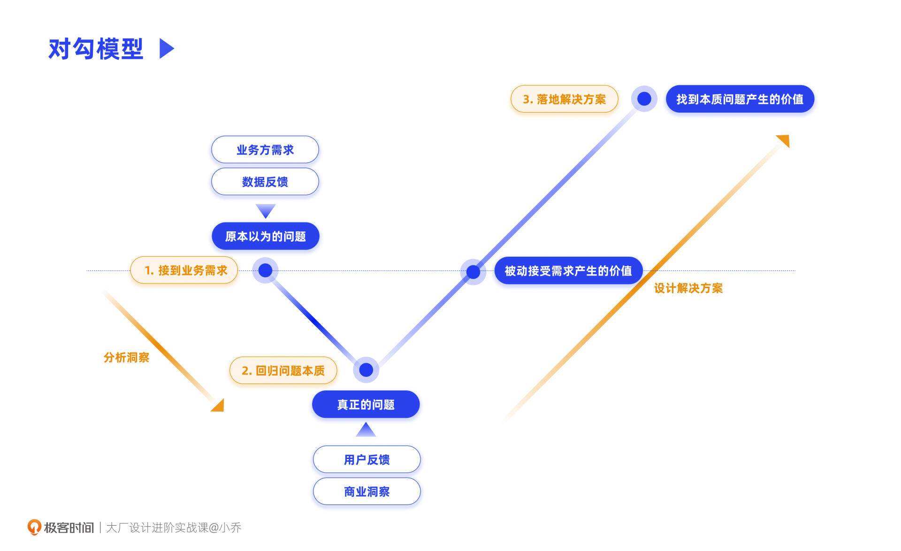
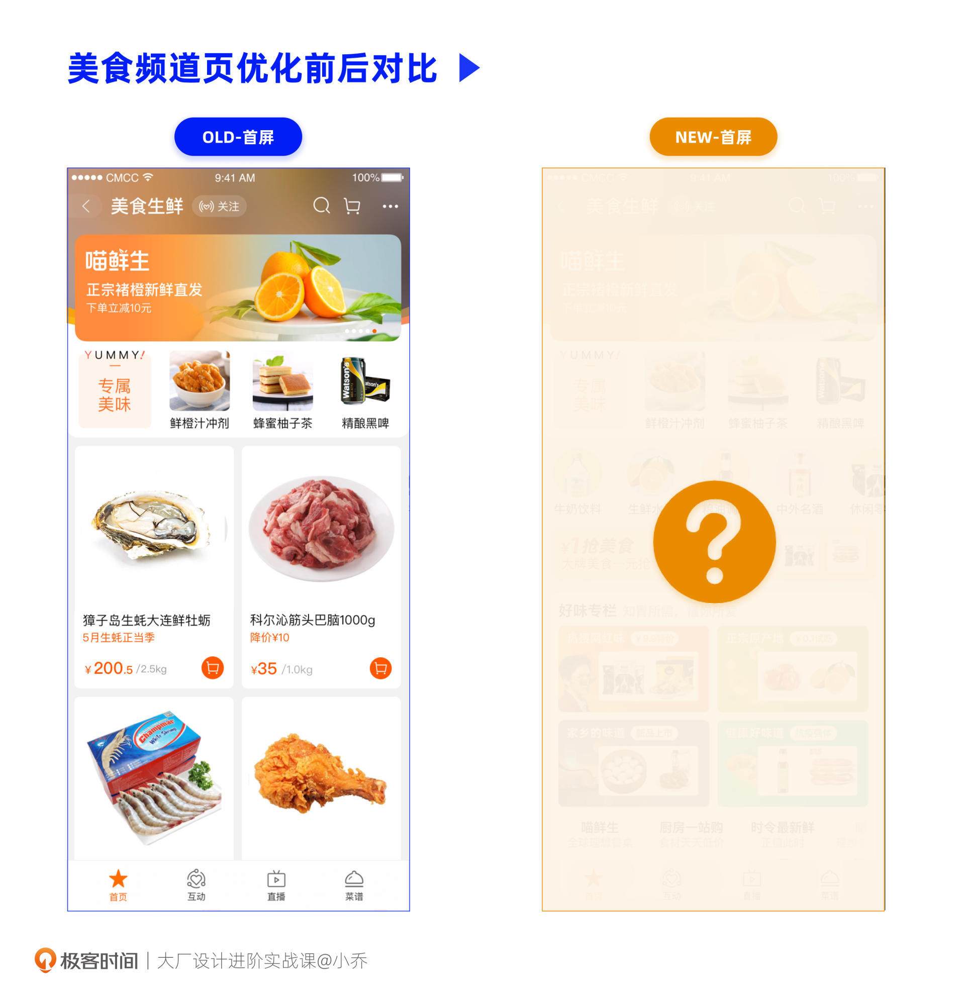
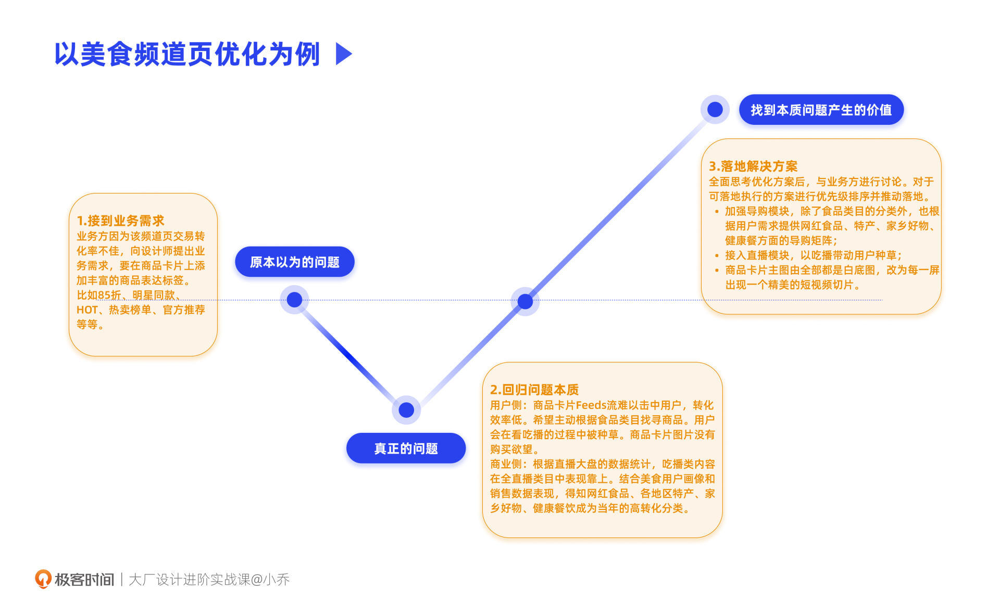
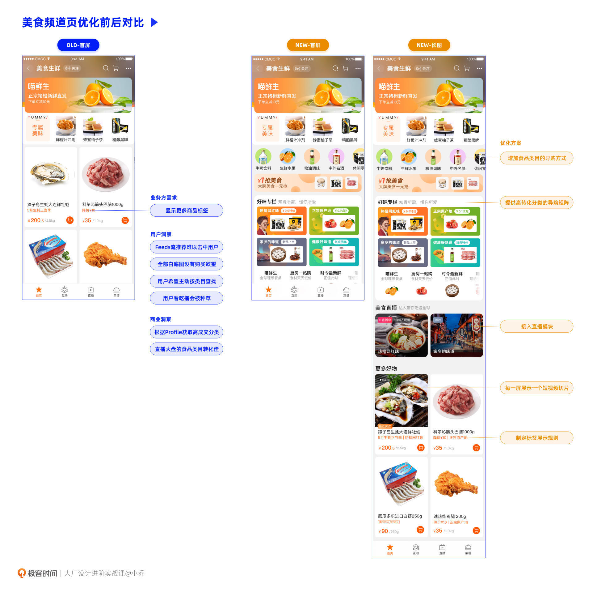

- 00 开篇词 升维思考，是设计师有效成长的第一步.md.html
- 01 业务周期：0-1-10-100-N的发展策略.md.html
- 02 商战模式：如何在商业竞争下突出重围？.md.html
- 03 市场洞察：如何找寻差异化撬动支点？.md.html
- 04 用户洞察：不懂用研的设计师不是好职场人.md.html
- 05 用户画像：是形式主义还是真的有效？.md.html
- 06 用户旅程：挖掘不同用户的核心机会点.md.html
- 07 职场晋升：看懂晋升的“游戏规则”.md.html
- 08 设计价值升级：五层进阶突破成长.md.html
- 09 基础价值 核心三原力：如何将需求转化为设计稿？.md.html
- 10 基础价值 第一性原理：从问题本质解决问题.md.html
- 11 基础价值 设计复盘：只是量化设计结果吗？.md.html
- 12 二级价值 负向网兜：如何全面发现负向问题？.md.html
- 13 二级价值 设计自驱：如何做好项目Owner？.md.html
- 14 二级价值 自驱合作：如何反内卷处理合作关系？.md.html
- 15 三级价值 增长误区：思维惯性陷阱和虚荣数据.md.html
- 16 三级价值 用户增长历程：AARRR是万能的吗？.md.html
- 17 三级价值 产品增长：如何做好产品创新？.md.html
- 18 三级价值 运营增长：如何自驱营销活动和投放？.md.html
- 19 三级价值 品牌增长 抢占心智，赢得人心红利.md.html
- 20 三级价值 增长实操：如何“步步为营”推动落地？.md.html
- 21 四级价值 L型赋能：让T型人才发挥更大价值.md.html
- 22 四级价值 “网状对比”解决共性痛点.md.html
- 23 五级价值 商业画布：设计师可以担任业务方吗？.md.html
- 24 五级价值 共创洞察：如何做好一次完善的workshop？.md.html
- 25 五级价值 领导力觉醒：写给新晋管理者.md.html
- 26 工作选择（上）：2B or 2C设计师？如何规划领域？.md.html
- 27 工作选择（下）：大厂 or 小厂？如何选择赛道？.md.html
- 28 人才地图：认知自我，成为高潜力人才.md.html
- 29 成长历程：如何从设计小白成长为团队负责人？.md.html
- 30 冰山模型：如何成为让面试官欣赏的“面霸”？.md.html
- 31 作品集指导：什么是面试官喜欢的作品集？.md.html
- 用户故事 什么是职场设计师进阶的正确姿势？.md.html
- 结束语 突破自我，成人达己.md.html
- 捐赠
10 基础价值 第一性原理：从问题本质解决问题
你好，我是小乔。
完成了上节课的学习，现在具备了设计“核心三原力”的你，已经是一名称职的设计师了。在扎实的设计专业能力上，能基于业务目标和对用户的洞察，通过“四步拆解法”输出可落地的设计方案，高质量地执行接到的需求。
但当你逐渐成长，具备了更全面的认知思维和知识储备时，也许会发现，在工作过程中接到的需求可能不够全面，甚至未必是合理的。遇到这种情况，你会选择怎么做呢？
感觉需求不合理怎么办？
在我管理设计团队的这几年，遇到过许多性格不同、潜力差异很大的同学，其中有两种比较典型的表现：
- 有的同学是非常优秀的设计执行者，设计稿在视觉层面可以达到高标准，但是在业务方的需求评审会上很难输出有效建议。TA能感受到需求没有那么合理，但又不知道什么是更合理的，也就这样执行下去了。
- 有的同学遇到不合理的需求时，会有意识地调研竞品是怎么做的，主动去访谈用户，找做过相关业务的同事、朋友咨询经验，并把发现的机会点反馈给业务方。
这两类同学都能意识到需求不合理，但后者可以推导出问题是什么，并且提供有逻辑支撑的解决方案。
比起意识到有问题，解决问题才是更高能力的体现。虽然最终输出的产物从表象上看都是高质量的设计稿，但从业务需求的优化到数据的有效提升，也都是设计结果和价值。主动解决问题的同学，参与度和投入度是远远大于纯执行的同学的，在做360环评时，合作方对于这类同学的评价就会明显更高，并最终影响绩效。
那想要成为可以发现问题并提供解决方案的角色，我们应该怎样做呢？这就需要你逐渐把自己的职能角色前置，从一个被动接受需求做设计执行的角色，转变为一个重度参与需求制定的角色。
看到这里你是不是非常兴奋，迫不及待想要看具体案例了？
别心急，爆发式成长的前提是认知的提升，提升认知和进化方法才是带来质变的因素。我们今天前半篇先要学习提升认知思维，从“第一性原理”出发，找到需求背后的问题本质；后半篇再以具体案例，讲解设计工作中的具体运用，结合上一讲的“四步拆解法”，把我们的想法转化为设计方案落地。
什么是第一性原理？
第一性原理，最早是两千多年前亚里士多德提出的，如果我们在网上查找第一性原理的含义，辞条解释比较晦涩，简而言之，第一性原理是在告诉我们，想看透事物的本质，就需要把事物分解成最基本的组成，从源头出发解决问题。
作为计算物理的一个专业名词，第一性原理并不是一个新概念，在2017年突然火遍互联网行业，许多同学听过可能就是因为马斯克。因为钢铁侠在现实世界中的人物原型马斯克告诉大家，他成功的秘密是运用了第一性原理作为思考框架。
马斯克说：“我们应该运用第一性原理来推理，而不是用类比的思维去思考问题。我们在生活中总是倾向于类比，别人已经做过或者正在做的事情，我们也都去做，这样发展的结果只能产生细小的迭代。第一性原理的思维方式是用物理学的角度看待世界，一层层拨开事物表象，看到里面的本质，再从本质出发一步步去推导。”- - 马斯克具体是怎么做的呢？在咨询行业的时候，我曾为某一家有知名度的电动汽车公司做过体验策略。在做决策者访谈时，CEO告诉我们，特斯拉在当时是世面上唯一一家“正向”开发电动汽车的公司。国内各种已知的新能源汽车都是“逆向”开发，将现成的油车改造成电车，硬生生地装入了电池，这并不符合电动汽车的结构和原理，所以当时的电动汽车的整车设计、车厂生产、安全性、驾驶体验等方面都没有那么优秀。
以特斯拉的电池研发为例，马斯克发现，电池成本是关键问题，每千瓦时会消耗大约600美元。当时大部分人都认为电池成本不会大幅度降低，因为供货商价格很难再压低了。但马斯克从本质原理出发，电池的组成是什么材料呢？他发现如果从伦敦的金属交易所购买原材料，将其组合，电池的成本就可以控制在每千瓦时80美元。
因此马斯克的演绎方式并不是怎样可以找到成本更低的电池供应商，采购更便宜的电池，而是直接从本质原理出发去找寻解决方案。
这个故事是不是很有启发？那这一思考方式能对我们的设计工作有怎样的指导呢？其实，行业内颠覆性的设计创新都离不开第一性原理。
如果没有第一性原理的思考，乔布斯也不会研发出全触摸屏的iPhone，将键盘改为触屏式，在不需要时隐藏起来，毕竟当时大部分手机品牌都在比拼谁能把物理键盘设计得小巧又好按；如果没有第一性原理的思考，也不会出现Musical.ly这样上下划动切换短视频的沉浸式交互，它是抖音和TikTok交互设计的原型（2014年上线，在2017年被今日头条现在的字节跳动收购）。
如果你初入这个行业，还是个年轻的设计同学，目前可能还没打算做出颠覆性的设计创新，也还没有做好主导项目的心理准备，没关系，在我们的日常工作中，第一性原理的思维方式也非常重要。想一想今天开头的问题，当我们遇到不合理或者不完整的需求，其实就可以通过第一性原理去优化需求，找到更好的解决方案。
如何运用在日常设计工作中？
基于第一性原理的思维方式，我们可以使用“对勾模型”来推导。这是我在工作中总结的，一套简单、好用且有效的设计思考模型。主要分为三步：

第一步：接到业务需求
首先我们要清楚需求是怎么来的。业务方往往会根据产品上线后的数据反馈，发现一些问题，从而提出解决问题的业务需求。但数据往往只是外围的表象，我们设计师要根据数据和用户反馈，剖析出本质问题。
举个例子，如果电商App中某频道页的交易转化不佳，有的运营同学就会提出，能不能在商品卡片上添加更多信息，比如“月销量”、“折扣信息”、“明星同款”等等字段，狠狠地添加了10多个，还要求使用五颜六色的标签，吸引用户的目光进行交易转化。
第二步：回归问题本质
给商品卡片贴标签这样的需求，可能每个电商设计师都遇到过，每当接到类似的需求，其实是很无奈的。
一方面以我们的经验，马上就能判断这将影响视觉美观度、影响用户的浏览效率，就像密密麻麻的补丁贴在我们原本美观的界面上；另一方面，这样的业务需求对设计师来说是没有太多成长空间的，无非是将这些标签的设计都穷尽出来，然后上线去做分桶测试，看看哪种样式能提升转化。
此时我们就需要找出这个频道页交易转化不佳的真正原因，访谈用户得到答案，查找商业数据判断机会。比如根据用户访谈发现，用户希望有一些导购的功能，想看看热卖榜单，想看看别人都在买些什么，而不是整个页面全是商品推荐。因此，商品上的信息标签不够多，并不是它的本质问题，缺少友好的导购体验才是本质问题。
第三步：落地解决方案
我们顺着“对勾模型”回归问题本质后，就需要体系化地思考如何解决问题。
基于用户反馈和商业洞察，发现频道页交易转化不佳并不是在商品卡片上加几个标签就能很好地解决的，而是需要全面地思考方案。比如从频道页的整体架构来说，应该改版，添加导购模块；从信息传达的角度来说，可以引入直播内容，让用户种草。
当我们找到本质问题后，可以按照上节课的“四步拆解法”，从方方面面探索可行的解决方案，并按优先级落地，最终就能收获解决本质问题的价值提升。如果只按照原本的业务需求直接执行，在商品坑位贴满标签，也许交易转化率也只能提升2%；但如果系统地规划方案，把方案按优先级落地，也许交易转化率可以提升20%。
负责任的业务方是非常期待这样的设计师的，除非这个业务同学本身就只想随便做个方案打发一下工作，不然大部分情况下都是可以成功推动落地的。
以案例演示“对勾模型”的实操方法
现在你已经掌握“对勾模型”了，但是能用学到的模型解决真实的工作问题，才是有效的学习。接下来，我们就以淘宝美食频道页的优化改版项目为案例，演示实操的方法。
第一步，接到需求。业务方因为美食频道页交易转化率不佳，向设计师提出业务需求，要在商品卡片上添加丰富的商品信息标签，比如“85折”、“明星同款”、“HOT”、“热卖榜单”、“官方推荐”、“网红”、“特产”等等。
拿到这个需求，你可以先停下来想一想自己接下来要怎么做，再跟着我的分析思路一步步加深理解。

这个需求不是那么合理与全面，因此，我们可以按照“对勾模型”的步骤，根据对商业和用户的洞察，发现本质问题。
先分析用户侧。根据真实用户调研，我们发现商品卡片Feeds流难以击中用户，转化效率低。同时，我们也能找出用户的三个特性：用户希望主动根据食品类目来找寻商品；用户会在看吃播的过程中被种草；用户对Feeds流中的商品卡片没有购买欲望。
再分析商业侧。根据直播大盘的数据统计，吃播类内容在全直播类目中表现靠上。因此从商业数据中可以判断美食频道适合接入直播内容，对成交转化有利。结合美食用户Profile和销售数据表现，我们得知用户以年轻人群为主，且大多远离家乡，符合用户诉求的网红食品、各地区特产、家乡好物、健康餐饮等商品是当年的高转化分类。

第三步要全面思考优化方案，然后与业务方讨论。对于可落地执行的方案进行优先级排序并推动落地。
首先加强导购模块，除了食品类目的分类，也根据用户需求提供网红食品、特产、家乡好物、健康餐等方面的导购矩阵。同时频道页接入直播模块，以吃播带动用户种草。商品卡片主图也由全部都是白底图，改为每一屏出现一个精美的短视频切片，提升商品表达，增强购买欲望。
同时，因为我们和业务方是友好合作关系，也应当合理转化有道理的业务需求。添加商品卡片的标签确实可以提升交易转化，但为了避免全屏花花绿绿、视觉重点不聚焦，我们可以制定标签的显示规则：每个商品最多显示两个最重要的标签，同时保持同一个颜色。
最后，我们来一起看下美食频道页的优化前后对比图，帮助你可视化地理解。

要特别提醒的是，在思考设计方案的时候，我们要避免自己掉入惯性思维陷阱，要避免想当然地复用别人做成功的“好设计”。如果你在工作中碰到了类似的需求，需要根据你的项目重新推导，找出本质问题，全方位思考解决方案，而不是照搬我们今天的方案。
在之前的一份工作中，我有幸听过HRVP亲自授课的管理者培训课，她提到CEO当初在面试她的时候，问过她有什么过往的项目是可以直接复制到新公司的。她是这么回答的：“没有，我没有任何项目可以直接复制，我能复用的只有思维方式和经验方法。”这个精彩的回答让我印象深刻。
每家公司的人才定位、职能部署都是不同的，有的公司偏向招年轻和敢于挑战的人才，有的公司偏向招年纪较大的成熟职场人，不同的公司定位决定了不同的招聘要求和培养方式。
我们做设计项目也是一样，如果看到一些精彩的案例分析或者竞品的设计，不应该想着怎么复制到自己的工作中，因为每个产品的定位、用户都有差异，可以学习的只有背后的思考推导方法。
今日小结
今天，我们学习了如何前置设计师在职场中的参与角色。当接到不全面或者不合理的业务需求时，我们需要倒回本质，根据用户和商业洞察找到真正的问题，再重新出发，全面地思考解决方案并推动落地。
这需要我们具备“第一性原理”的思维方式，在接到需求时多问几个为什么，直到自己洞察到本质问题。第一性原理可以帮助我们把原本只能轻微提升的价值，转变为大幅度地突破和提升，从而创造更大的设计价值。
在日常工作中接到需求，可以用“对勾模型”重新思考本质问题，并给出更优的设计解决方案。但你一定要明白，所有的设计优化方案都是不可直接复用的，不同的业务必然存在差异和变化。今天的案例只是帮助你理解底层的分析方法，毕竟各个行业在发展，唯一不变的就是变化，授之以鱼不如授之以渔。
不知道你是否注意到，这门课程里的许多模型都是网络上找不到的。时代在发展，行业在变革，有些经典的观念或方法，在如今未必是最佳的解决方案。这些分析模型，有一些是我对行业内依然可用的成熟模型的讲解，也有许多就是我回归第一性原理，根据当今工作中真正遇到的问题和解决方式，重新总结的思维模型和分析方法。
互动时刻
你在日常工作中，接到过不合理或者不全面的业务需求吗？你是被动接受且执行了，还是在重新思考后向业务方提出了优化建议？
欢迎在留言区分享你的经验，与我和其他同学一起讨论，让我们在互相交流的过程中，向彼此学习更多的行业知识。我们建了一个读者交流群，欢迎你的加入，和其他同学一起成长！如果觉得有收获，也欢迎把文章分享给你的朋友。我们下节课见。
© 2019 - 2023 Liangliang Lee. Powered by gin and hexo-theme-book.